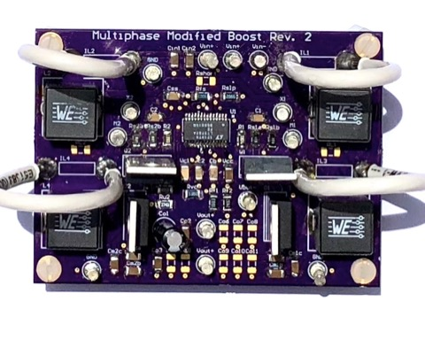
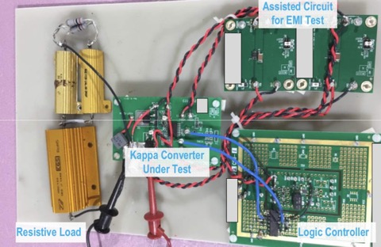

Hi, I'm Zoe
I am a problem solver with a degree in Electrical Engineering. For my first few years after college I exercised my methodical debugging skills and precise technical communication as a hardware engineer. Now I am looking for new problems to solve with software, which is part of why I learned to develop and host this site. Check out my resume, see my work on GitHub, or find me on LinkedIn.
About
Graduated from California Polytechnic State University San Luis Obispo with my BS degree.

Stayed at Cal Poly to earn my MS degree. You can check out my thesis here.

Evaluated analog integrated circuit power products as an evaluation engineer for Analog Devices Inc. You can check out a paper I contributed to over on IEEE Xplore.